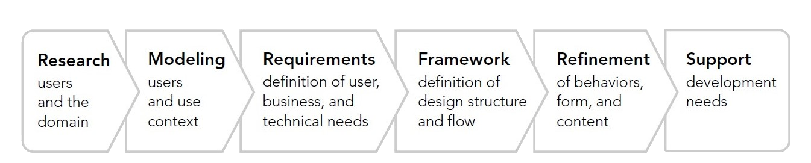

Analysis
Before you judge users, walk a mile in their shoes
Analysis Theory ScriptHey, this is Simon and welcome to analysis theory!
When we speak about user-centered design, we always speak of a process consisting of several steps. Here, you see this process is divided into the sections: plan, design, prototype and review, which is also called evaluation. In this lecture, we want to speak about the planning. When user-centered design is used in a professional context and when the aim of the process is to have a commercial product, one part of planning is analyzing the competition, but more important for us is the topic of defining user requirements. These requirements consist of our knowledge regarding the potential users, their goals and the environment in which our product shall be used in the future.
Goal-directed design is a user-centered methodology which incorporates six steps. It contains talking to users, analyzing what they say and finding out whether one user interface manages to satisfy all user groups or if it is necessary to design different interfaces. The research phase consists of interviewing stakeholders and users. During this phase it is not unusual to conduct a literature review as well. The collected information can then be clustered for modeling, which leads to personas and to workflows. Personas represent archetypal users and workflows describe what users do when interacting with a product and in what sequence. This knowledge helps us to define the requirements, which describe which details and information users need and which functional needs they have for interacting with the product. The step of framework definition consists of determining form factors and a visual language strategy. We might develop strategies for more than one interface thus one for each persona depending on how different their requirements are. In the design and development phase, the detailed design and interaction behavior is specified, which can be then developed or coded but these aren't part of the analysis.
In the planning section of the user-centered design process, we analyze our potential users, therefore, our target group. We can ask ourselves questions like "How old will the users most probably be?" "Are they versed in the interaction with technological systems?" and so on. When we have gathered all the information we need, we can cluster this information to build personas, which are personalized representations of our different target groups. Equally important to the understanding of our users is the understanding of their intentions. Only if we know what the users want to achieve by using our system, we are able to help them achieve their goals. Additionally, it is essential to know how our users interact with a specific kind of system and how they wish they could interact with a specific kind of system. When we have insights about their preferred kind of interaction, we are able to take this knowledge into account when we design the system. Last but not least we have to consider the environment in which our system will most probably be used. It could be that we develop an intuitive system which is very usable in one environment, but totally unusable in another. Thus, we collect knowledge to avoid mistakes like this. By saying "environment" we do not only mean the physical but also the social context. For example, being alone or being in an environment, where other people are, can lead to a change in the requirements.
Thinking of what i just said, it seems logical that analysis is the basis of the entire human-centered design process. If we have false assumptions about the users, their goals or the context, we might make mistakes in the following process steps. But don't worry, as you can see here, the design process is depicted as a spiral. This means, if you notice inconsistencies which emerge from mistakes in an earlier step, you can make it better in the next round. You see, the human-centered design process is iterative. You go through all the process steps several times until the evaluation gives you the impression that your system serves its purpose and is usable for your target group within the environment it will be used.
Knowledge about how users think and what they expect from interacting with a system helps us design adequate solutions. The representation of what people know and expect is called a mental model. By interacting with, for example, a specific computer program, a person generates a representation of the system. This representation consists of facts and assumptions which could be true or false. Nonetheless, based on experience this person now has an internal construction of the computer program, which in turn affects his or her expectations towards it or similar types of programs. The way of interacting is also part of a mental model. If a person has no experience with a program, this person still might have expectations on how the interaction could be. These expectations could be shaped by other people's stories or past interactions with similar systems. Most importantly, mental models are prone to changes, so if people have an incorrect mental model regarding a system before interacting with the same, the mental model changes while interacting. So, good news, users can learn to interact with a product and the success is not only dependent on the first contact! Sometimes, the human machine interface is oriented towards the implementation model, which means that the user interface follows the logical structure of the program and not the structure users might expect from the system, which can impede the usage and consequently lead to users being unable to achieve their goals. By understanding mental models regarding systems and system interactions, we can adapt our product to the expectations users have and therefore ensure successful human computer interaction. Otherwise we might have the case that the designer naturally understands the interface, since it corresponds to his mental model, but our users have problems understanding the design due to their lower knowledge regarding the product.
As already mentioned, representations in a mental model are not always correct. This is the case because they are often based on incomplete facts, past experiences or intuitive perceptions. As you can imagine, all those sources for building up a mental model are not always consistent with objective reality. These mental models formed by different, not a hundred percent reliable sources have an effect on a user's actions and behavior and also influence what people pay attention to in complicated situations. Since they are partly based on experience and experience influences our way of perceiving, as well as our actions, mental models also define how people approach and solve problems. It is not important that the mental models are 100 percent accurate and contain everything concerning a system. They only have to contain what users need for a successful usage and therefore it is a simplification of a possible complex product. Our task is to build the interface in accordance to the user's mental models or at least shape the mental models during interaction that the usage is satisfactory for the user.
Here, you can see some shapes. The shape to the very left, it's a square, represents the implementation model which reflects the technology, for example, the logic a program is based upon. The shape to the very right, the circle, represents the mental model reflecting the user's knowledge about and expectations towards the system. The three shapes in the middle are possible represented models, also called conceptual models or system images. One of those shapes is the one the user can see, the represented model is what the user sees and interacts with through the human machine interface or graphical user interface. Logically, the more similar the represented model is to the mental model, the less the discrepancies between users assumptions or expectations and the reality, therefore, the better.
Thanks for the attention and see you next time!
Goal-directed design
Mental Models
Mental models can be discovered by interviewing potential users applying the Thinking-Aloud technique, as you will do for an assignment in iteration 1.
"Mental Models" by Jakob Nielsen, online article
"6 Examples of Context of Use" by John Spacey, online article
Overview Analysis tasks
We will take a closer look at analyzing for several tasks. Feel free to already discover more about the methods: